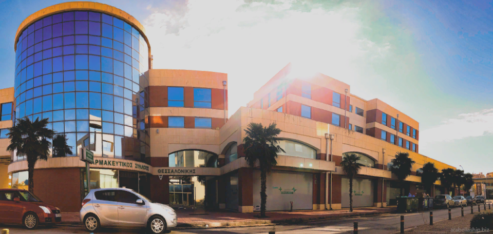

Από Αλίκη Διακάκη
Η ανάπτυξη της φαρμακολογίας έχει καθοριστικό αντίκτυπο στη ζωή μας. Συνέβαλλε στην βελτίωση του βιοτικού μας επιπέδου και συγχρόνως αύξησε δραστικά το προσδόκιμο ζωής.
Οι πρώτες ιατρικές παραδόσεις ξεκινούν από τη Βαβυλώνα, τη Κίνα, την Αίγυπτο, τη Μεσοποταμία και την Ινδία με την αγιουβέρδα που χρησιμοποιείται ακόμη και σήμερα και τη Shushruta. Φυσικά δεν πρέπει να λησμονούμε ότι και η χώρα μας έχει βαθιά ιστορία με χαρακτηριστικές προσωπικότητες τον Γαληνό και τον Ιπποκράτη.
Αρκεί μόνο να αναλογιστούμε ότι τα πανεπιστήμια άρχισαν τη συστηματική εκπαίδευση ιατρών γύρω στο 1220 μ.Χ. στην Ιταλία. Αργότερα και οι Άραβες γενικότερα συνέβαλλαν στην ανάπτυξη της Ιατρικής και κατ’ επέκταση της φαρμακευτικής επιστήμης.
Αρκεί μόνο να αναλογιστούμε ότι τα πανεπιστήμια άρχισαν τη συστηματική εκπαίδευση ιατρών γύρω στο 1220 μ.Χ. στην Ιταλία. Αργότερα και οι Άραβες γενικότερα συνέβαλλαν στην ανάπτυξη της Ιατρικής και κατ’ επέκταση της φαρμακευτικής επιστήμης.
Μετά το πέρασμα από το μεσαίωνα και ύστερα τις ταχύρρυθμες εξελίξεις του 19-20ου αιώνα με τη συστηματική μελέτη της φύσης των μολυσματικών ασθενειών αλλά και τους τρόπους μετάδοσης τους, κατορθώσαμε να εξαφανίσουμε ένα μεγάλο μέρος των ασθενειών που τους προηγούμενους αιώνες ξεκλήριζαν ολόκληρους λαούς.
Ανακαλύφθηκαν και ταξινομήθηκαν οι παθογόνοι οργανισμοί ενώ άρχισαν να πωλούνται η πενικιλίνη και πολλά άλλα αντιβιωτικά.
Στη Θεσσαλονίκη βρίσκεται το μοναδικό μουσείο της χώρας μας, μέσα στο οποίο μπορούμε να γνωρίσουμε την ιστορία της φαρμακευτικής και τον τρόπο με τον οποίο λειτουργούσαν τα φαρμακεία στην Ελλάδα.
Οι φαρμακοποιοί εκείνης της εποχής, εκτός από τα φάρμακα, τα οποία παρήγαγαν οι ίδιοι, από ουσίες που εμπεριέχονται στα φυτά, τα έπλαθαν και στη συνέχεια έκοβαν τα χάπια, πουλούσαν γυαλιά, ιατρικά εργαλεία, ταρίχευαν τους νεκρούς, έκαναν τις μικροβιολογικές εξετάσεις και όλες τις αναλύσεις των σωματικών υγρών, διότι δεν υπήρχαν ειδικοί μικροβιολόγοι.
Η ιδέα για τη δημιουργία ενός μουσείου το οποίο θα ήταν αφιερωμένο στην ιστορία των Φαρμακείων, εκφράστηκε, τον Ιανουάριο του 2001, από τον πρόεδρο του Φαρμακευτικού Συλλόγου, Κυριάκο Θεοδοσιάδη.
Έπειτα από συζητήσεις συστάθηκε η συντονιστική επιτροπή από προσωπικότητες του φαρμακευτικού, κυρίως, χώρου. Αποφασίστηκε η αναζήτηση ενός χώρου ο οποίος θα μπορούσε να στεγάσει το υπό ίδρυση μουσείο, ενώ συγχρόνως δημιουργήθηκε το σωµατείο µη κερδοσκοπικού χαρακτήρα για την υποστήριξη αυτού του έργου.
Ενημερώθηκαν οι φαρμακοποιοί όλης της χώρας προκειμένου να παραχωρήσουν τα κειμήλια που είχαν στην κατοχή τους.
Στο σωματείο του μουσείου μπορούσαν να ενταχθούν πτυχιούχοι Φαρμακευτικής, αλλά και άνθρωποι οι οποίοι δεν έχουν άμεση σχέση με το αντικείμενο, οι οποίοι όμως ενδιαφέρονται ουσιαστικά για την συντήρηση αυτής της κληρονομιάς.
Τον Ιουνίου 2003 το Υπουργείο πολιτισμού παραχώρησε το κτίριο της οδού Γοργούς 11. Έπειτα ο Δήµος Θεσσαλονίκης έδωσε προσωρινή λύση στο πρόβλημα της στέγασης του μουσείου για την πρώτη συλλογή και την παρουσίαση των εκθεμάτων, παραχωρώντας δύο αίθουσες στο παραδοσιακό κτίριο της οδού Κρίσπου 7.
Το Δ.Σ. του Φαρμακευτικού Συλλόγου Θεσσαλονίκης ανέλαβε πρωτοβουλίες για την ίδρυση σωματείου τον Μάιο του 2007 µε την επωνυμία «Ελληνικό Φαρμακευτικό Μουσείο» και με την αγορά των νέων γραφείων του συλλόγου, στην σημερινή τους διεύθυνση, στην οδό Εθνικής Αντιστάσεως 173-17.
Τη γενική διεύθυνση του μουσείου έχει αναλάβει αφιλοκερδώς η Ευαγγελία Βαρέλλα, επίκουρος καθηγήτρια του τμήματος Χημείας Α.Π.Θ. και γενική γραμματέας της Διεθνούς Ακαδημίας της Ιστορίας της Φαρμακευτικής.
Ευεργέτες και δωρητές έσπευσαν να προσφέρουν κειμήλια και χρήματα, υποστηρίζοντας την προσπάθεια του «Ελληνικού Φαρμακευτικού Μουσείου» έτσι τον Οκτωβρίου του 2007 άνοιξε τις πύλες του και ξεκίνησε επισήμως η λειτουργία του.
Ένας από τους μεγαλύτερους ευεργέτες, ο Μιχάλης Πάνου, πρόσφερε μεγάλο μέρος από τα έπιπλα, που βρίσκονται ακόμα και σήμερα στο κτήριο.
Από τα έπιπλα του φαρμακείου ξεχωρίζει η σύνθεση µε τις βιτρίνες από ξύλο βελανιδιάς, η οποία κατασκευάστηκε από αυστριακούς τεχνίτες και έπειτα µμεταφέρθηκε στο Βόλο.
Το ύψος της είναι σχεδόν πέντε μέτρα και το πλάτος της 6,40. Στο κέντρο της, υπάρχει ληκυθοφόρο τόξο ενώ το πάνω μέρος κοσμείται από κεφαλές λεόντων και δράκοντες.
Οι τρεις βιτρίνες ενώνονται στο πάνω μέρος µε δύο ενδιάμεσα τεμάχια, κάτω από τα οποία τοποθετούνται τα επιχρυσωμένα αγάλματα από γύψο του Απόλλωνα και της Αφροδίτης.
Ένα ακόμη έκθεμά ιδιαίτερης σημασίας, ανάμεσα στα βιβλία συνταγών και τα επιστολόχαρτα με τις διακοσμητικές λιθογραφίες, είναι τα άπαντα του Διοσκουρίδη Πεδάνιου του 1598, από την προσωπική συλλογή του Κυριάκου Θεοδοσιάδη, εκτυπωμένο στην ελληνική και τη λατινική γλώσσα.
Κατά τη διάρκεια της υπηρεσίας του στο ρωμαίικο στρατό κατόρθωσε να γνωρίσει σχεδόν όλες τις περιοχές του γνωστού έως τότε κόσμου και κατέγραψε λεπτομερώς τις φαρμακολογικές δράσεις φυτικών φαρμάκων που ανακάλυψε.
Σπουδαία θέση στο μουσείο κατέχουν τα φορητά φαρμακεία, υπάρχει μάλιστα ένα γαλλικής κατασκευής, το οποίο χρονολογείται στις αρχές του 19ου αιώνα, το οποίο προέρχεται από ένα πολεμικό πλοίο.
Ένα εξίσου σπάνιο έκθεμα είναι το αμερικανικής κατασκευής φορητό φαρμακείο σε δερμάτινη θήκη το οποίο κατασκευάστηκε στις αρχές του 20ου αιώνα.
Διαθέτει φιαλίδια µε μικροσκοπικά δισκία διαφόρων φαρμακολογικών δράσεων.
Ακόμη, μπορούμε να θαυμάσουμε μια συλλογή µμικροσκοπίων, τα οποία χρησιμοποιούσαν οι φαρμακοποιοί για τις μικροβιολογικές και χημικές αναλύσεις στα εργαστήρια τους.
Μια περιήγηση ανάμεσα από τα φιαλίδια με τις δραστικές ουσίες, αλλά και τα επιβλητικά και περίτεχνα έπιπλα, τη «Χημική Φιλοσοφία» του Φουρκρουά, η οποία εκδόθηκε στις αρχές του 18ου αιώνα, και αρκετά ακόμη εγχειρίδια χημείας, τα έργα του Λάνδερερ και του Σαρτωρί και τις συνταγές των φαρμακοποιών του Όθωνα, ταξιδεύει τον επισκέπτη σε μια εποχή όπου τα φαρμακεία δεν ήταν μονάχα χώροι παροχής υπηρεσιών υγείας, αλλά και τόποι όπου συνδιαλέγονταν πνευματικοί και σκεπτόμενοι άνθρωποι.
Το μουσείο είναι ανοιχτό από Δευτέρα έως Παρασκευή, από τις 8:00 το πρωί έως τις 3:00 το μεσημέρι.
Η είσοδος είναι ελεύθερη.
Οι ενδιαφερόμενοι μπορούν να καλέσουν στο τηλέφωνο 2310471776 για να προγραμματίσουν μια ομαδική επίσκεψη.
Post Views: 361
ΑφΗστε Ενα ΣχΟλιο
Η ηλ. διεύθυνση σας δεν δημοσιεύεται. Τα υποχρεωτικά πεδία σημειώνονται με *